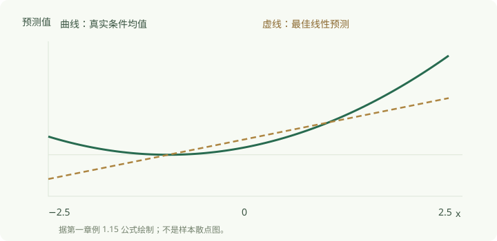

例
1.15：一条最佳直线怎样漏掉真实曲线
来源：Chapter 1，PDF 第 26–27
页。目标：完整算出非线性条件均值、最佳投影与投影误差。
这一步要做什么
完整算出非线性条件均值、最佳投影与投影误差。本课的 A
先示范完整动作，B 再用相同方法练习；可以先在纸上作答，再展开答案。
概念与方法
保留原例 1.15 的全部数据生成条件。
与
相互独立，且各服从
，
独立且误差均值为零，所以真实条件均值为
它不是
的仿射函数。限制特征为
时，只允许一条直线，无法把二次项完整写出。

真实条件均值与最佳线性预测
图中曲线是
，直线是
。图只展示
便于观察；原例正态支持集是整个实数轴。最佳指整个分布权重下的平均平方误差最小，不指直线必须在每一点贴合曲线。
上一课已证明中心化平方项与
正交。本课再走完正规方程，不能因图形看起来合适就认定系数。
例题 A
例 1.15：在上述完整条件下，求
、、，并验证
与
。
A 解答
查看示范解答
正态矩给出
，因此
。又
，
最后一项由独立性与零均值为零。因此
，。投影误差为
两个无条件矩均为零：，。但是
它仅在
处为零，整体上不是零函数。作为额外检查，条件均值预测的 MSE 为
，直线预测的
MSE 为
；多出的
是被漏掉曲率的损失。
练习 B
新增练习 · 编辑配套练习；训练本课 A 已示范的核心动作。
补充练习：
独立且均服从
，，只使用
。求真实条件均值、最佳系数、投影误差的条件均值与
MSE。
B 解答
完成后查看参考解
真实均值为
。，、，所以
。，其条件均值为
，且两个无条件正交矩仍为零。独立性使平方交叉项为零，MSE
为
。
一句小结
最佳线性系数可完全正确地解决投影问题，同时没有正确描述真实条件均值。